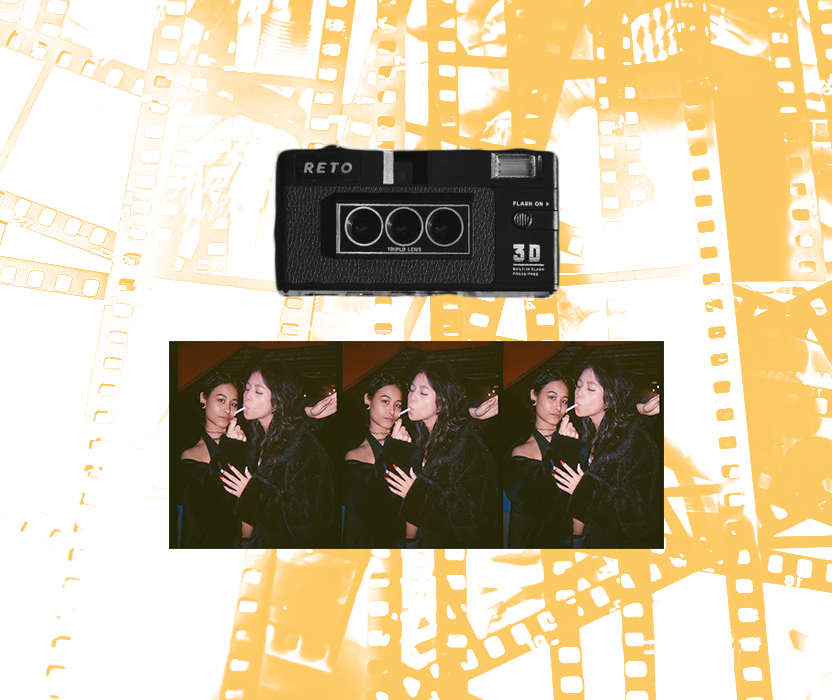
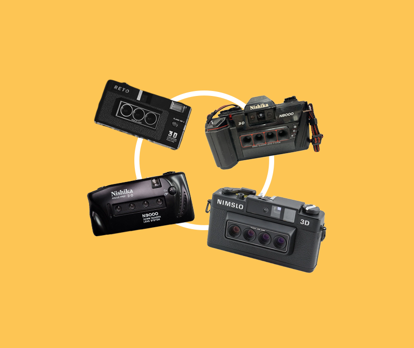

- These photos work best with a lot of dynamic, try shooting moving subjects
- High contrast is Key, either shoot in really bright environments or use the flash
- These cameras have a low range before they get noisy, I would keep the subject between 2-4 meters
- After testing different films, I find Gold 200 works the best
HOW TO SHOOT
3D PHOTOS
One of my first cameras I ever owned was a 3D film camera. These cameras were first introduced in the 1980’s and all hold a unique characteristic of having 2-4 lenses on their body, resembling an insect or bug.


3 LENS
3 PHOTOS
The camera I own is called the RETO-3D which is a modern remake of these cameras. When looking inside of the camera, you can see that the lens captures images in portrait format but are divided up into 3. Each image covers ½ a frame, meaning 3 photos that make up a 3D photo covers 1½ frames. Thus a roll of 36 exposures will give you 24 3D photos and a roll of 24 exposures will give you 18 photos. So how do you use these cameras and then create the 3D effect with film?
One of my first cameras I ever owned was a 3D film camera. These cameras were first introduced in the 1980’s and all hold a unique characteristic of having 2-4 lenses on their body, resembling an insect or bug.
TIPS AND TRICKS
A few key pointers to keep your images dynamic and really utilize the 3D effect:
DIFFERENT TYPES
OF CAMERAS
One of my first cameras I ever owned was a 3D film camera. These cameras were first introduced in the 1980’s and all hold a unique characteristic of having 2-4 lenses on their body, resembling an insect or bug.
